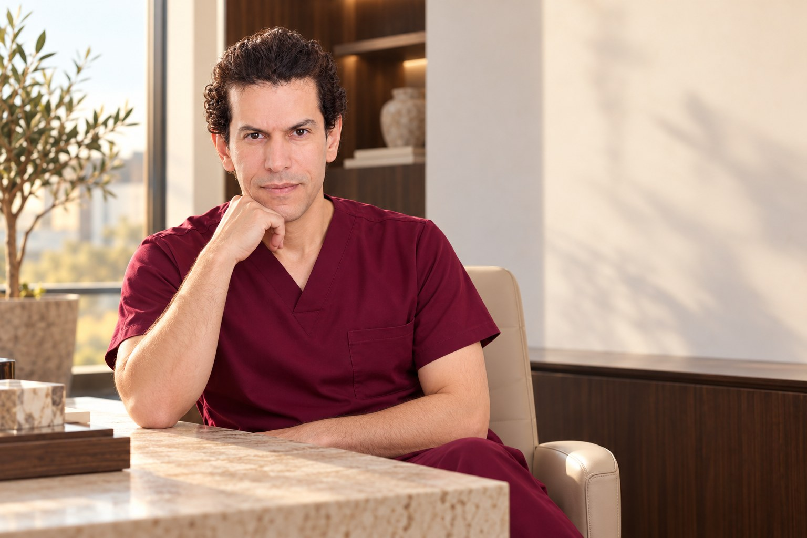
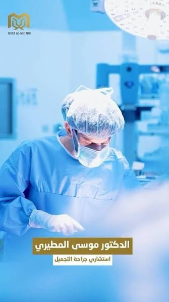

BOARD CERTIFICATIONS
أربعة مسارات للبورد.
تخصص واحد.
السعوديالعربيالأوروبيالأردني
شهادات بورد في جراحة التجميل.
استشاري جراحة التجميل والترميم · الرياض
التفاصيل تصنع الفرق.
والقرار يبدأ بفهمها.
تأهيل في التجميل والترميم، ودراسات متقدمة في برشلونة. تعرّف على المسيرة، واكتشف الخيارات التي تُناقَش في استشارتك.
الاختصاصي الطبي الأول / ماي كلينك الحمراء
رئيس قسم جراحة التجميل سابقًامدينة الأمير سلطان الطبية العسكرية
شهادات بوردالسعودي · العربي · الأوروبي · الأردني
درجتا ماجستيرترميم وتجميل الثدي · الجراحة المجهرية
مكانان للكشفالاختصاصي الأول · ماي كلينك الحمراء
01 / رحلة الاستشارة
كل خطوة تضيف تفصيلة.
مرّر لتجتمع الصورة، أو شغّل المشهد.
أولًا / الهدف
نبدأ بما يشغلك، وما تتطلّع إليه. الاستشارة مساحة لطرح أسئلتك وتوضيح توقعاتك.
ناقش ما ترغب في تغييره وتوقعاتك وأسئلتك.
التاريخ الصحي والفحص الطبي أساس معرفة ما يناسب حالتك.
ناقش البدائل والمخاطر وفترة التعافي المتوقعة.
تتّضح الخطوات وفق تقييم الطبيب، وتتخذ قرارك بعد فهم التفاصيل.
02 / عن الدكتور
د. موسى المطيري، استشاري جراحة التجميل والترميم. تأهيل يمتد من شهادات البورد إلى دراسات متقدمة في برشلونة، ومسيرة شملت رئاسة قسم جراحة التجميل في مدينة الأمير سلطان الطبية العسكرية.

الملف الطبي
رئيس قسم جراحة التجميل سابقًا في مدينة الأمير سلطان الطبية العسكرية بالرياض، وحاصل على ماجستير في ترميم وتجميل الثدي وماجستير في الجراحة المجهرية من برشلونة.
تشمل مجالات ممارسته جراحات الثدي، ونحت القوام، وجراحات الأنف، وعلاج التثدي لدى الرجال، والتجميل غير الجراحي.
استكشف مجالات الخبرة Musa AlmutairiBOARD CERTIFICATIONS
شهادات بورد في جراحة التجميل.
BARCELONA / SPAIN
امتداد أكاديمي في التجميل والترميم.
PROFESSIONAL BACKGROUND
رئيس قسم جراحة التجميل سابقًا
مدينة الأمير سلطان الطبية العسكرية، الرياض.
03 / مجالات الخبرة
اختر المجال لتتعرف على نطاق الممارسة، ثم ناقش ما يناسب احتياجك في الاستشارة.
01 / مجال الاستشارة
تشمل مجالات الممارسة تكبير وتصغير وشد الثدي، وجراحات ترميم الثدي.
طلب استشارة في هذا المجاليُحدَّد الإجراء المناسب بعد التقييم الطبي. تُناقش الخيارات والمخاطر وفترة التعافي في الاستشارة، وتختلف النتائج من حالة لأخرى.
04 / المسيرة والحضور
خبرة مهنية
رئاسة قسم جراحة التجميل سابقًا، ضمن مسيرة الدكتور المهنية في الرياض.
تأهيل متقدم / برشلونة
دراسات ماجستير في ترميم وتجميل الثدي والجراحة المجهرية.
أكتوبر 2023 / حوار توعوي
حوار حول جراحة التجميل وقرار الإجراء والاستعداد له.
اطّلع على اللقاء
05 / أماكن الكشف
اختر الفرع المفضّل، وتواصل لتنسيق موعد حضور الدكتور قبل الزيارة.
RIYADH / 01
الرياض · حي الملك سلمان
طريق الملك عبدالعزيز
RIYADH / 02
الرياض · حي الحمراء
شارع خالد بن الوليد
06 / خطوتك الأولى
اطلب موعدك، وحدّد الفرع الذي تفضّله. فريق الحجز ينسّق معك المواعيد المتاحة.
050 158 7400قبل الزيارة
اتصل على 0501587400، أو أكمل طلبك عبر واتساب. ينسّق فريق الحجز معك الفرع والموعد المتاح.
في الرياض: الاختصاصي الطبي الأول، وماي كلينك في حي الحمراء. أكّد موعد حضور الدكتور في الفرع قبل الزيارة.
النموذج يجهّز رسالة طلب فقط. يعتمد الموعد بعد إرسال الرسالة والتواصل مع فريق الحجز.
احتياجك وتوقعاتك والخيارات المناسبة لحالتك، والمخاطر وفترة التعافي المتوقعة وفق التقييم الطبي المباشر.